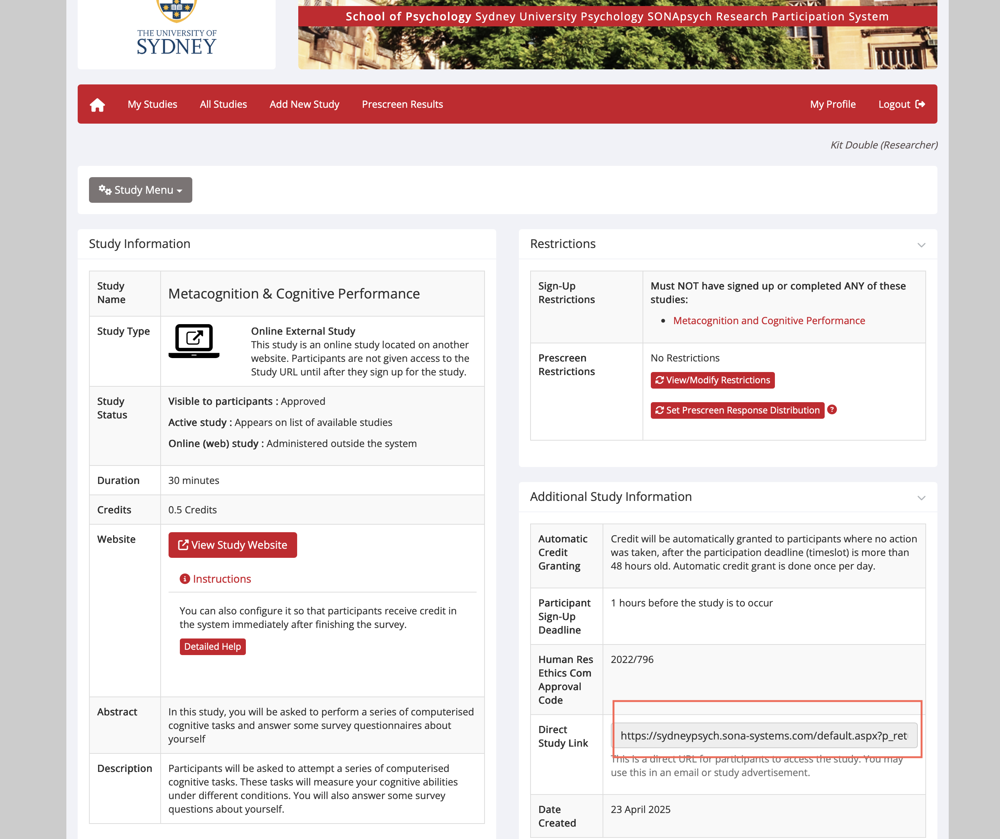

Running a jsPsych Study on GitHub with DataPipe and Automatic Redirect to SONA or Prolific
📑 Table of Contents
🔎 Purpose
To set up and run an online psychology experiment using jsPsych hosted on GitHub Pages, saving data with DataPipe, and automatically sending participants back to Prolific or SONA for credit.
📝 Step-by-Step Guide
🔹 Step 1: Get Ready
You will need:
- A Github account.
- An OSF account.
- A DataPipe account.
- A SONA account (if using SONA). Apply to be added as a new user here.
- A Prolific account (if using Prolific).
- Your jsPsych experiment files.
🔹 Step 2: Build Your jsPsych Experiment
Your folder should include:
| File | Purpose |
|---|
| index.html | The webpage that runs the study |
| assets/js/experiment.js | All the jsPsych timeline code |
| assets/js/survey.js | Code for surveys trials |
| assets/js/global.js | Initializes jsPsych, handles fullscreen, redirects, etc. |
| assets/img | Any stimuli images |
| assets/css | CSS |
✔ Tip: Use the latest lab jsPsych Experiment Template.
🔹 Step 3: Upload Files to GitHub
- Create a new repository → Name it (e.g., metacognition_study).
- Set it to public and initalise it with a README file.
- Upload your experiment files.
- Commit changes.
- If you have a lot of files or files that are too large to upload via the web then use the Github Desktop app.
🔹 Step 4: Turn On GitHub Pages
- Go to your repo Settings → Pages.
- Under Branch, select
main and /root.
- Click Save.
- Copy the study link (e.g.,
https://yourusername.github.io/metacognition_study/).
🔹 Step 5: Create OSF repository
Data is stored automatically in a repository on OSF. You will need the repository ID to set up the data piping
- Go to OSF and create a new project.
- Got to your new project, in the URL you can find the OSF Project. For example,
https://osf.io/xyztnu/
The OSF Project would be xyztnu. Copy it for the next step.
🔹 Step 6: Connect to DataPipe
- The first time you use DataPipe you will need to link it to OSF. Follow the instructions here under Link your OSF account to DataPipe
- Go to DataPipe and create a new project.
- The Title can be whatever you like.
- Under Existing OSF Project copy the OSF Project code.
- New OSF Data Component Name can be whatever you like (it will be the name of the folder where the data is stored)
- Turn on
Enable data collection? and Enable condition assignment? (even if only 1 condition)
- Copy the Dataset ID.
- In your
index.html update:
const DataPipe_ID = "YOUR_DATAPIPE_ID";
🔹 Step 7: Putting the study on Prolific
- Go to Prolific.
- To be added to the lab team (and use the lab funds), let Kit know your Prolific username.
- Create a new study
- Study name and Study description come directly from the ethics documents.
- Internal study name should used the format LastName-TASK-experiment-name.
- Typically, you want to limit the study to only desktop devices.
- Study URL was generated in Step 4. You should automatically append the Prolific ID to the URL by clicking Recroding Prolific IDs = URL parameters
- Completion paths can be set to automatic approve & pay. Copy the completion code (e.g. CGJ91R8S for use in Step 9).
- Set the length of time and pay people £6 per hour
- Set the sample country and click Quota Sample to make sure you get a balanced sample between males and females.
🔹 Step 8: Putting the study on SONA
- You can read the SONA handbook for detailed procedures.
- Go to SONA.
- Select Add new Study from the menu bar
- Select Online External Study.
- Study name, Brief Abstract, and Detailed Description come directly from the ethics documents (Teams > Ethics).
- Duration and credits should match so 1 = 60 minutes
- Human Res Ethics Com Approval Code should be set to the ethics protocol number (Teams > Ethics). For example, 2022/796.
- Study URL was generated in Step 4. You should automatically append the SONA ID to the URL by appending
?SONAID=%SURVEY_CODE%
https://yourusername.github.io/metacognition_study/?SONAID=%SURVEY_CODE%
- Active Study? = Yes; Automatic Credit Granting = Yes. Everything else can be left as it is.
- You will need your SONA experiment ID and credit token for Step 9. You can find them both in the Completion URLs listed under Study Information. See highlighted section below:

- You need to Request approval of a NEW SONA study get your study approved by the School's research staff. Complete the form here.
- For the question asking you to copy and paste the description from ethics concerning SONApsych participants, you should copy from the ethics documents (Teams > Ethics > Application Form). For example, 2022/796 ethics docs read:
1) Sydney University Psychology Research (SONA) participant system. First year psychology (PSYC1001 and PSYC1002) complete SONA studies for course credit. 1) SONA system: We intend to recruit participants through the Sydney University Psychology Research (SONA) participant system, where first- and second-year psychology students sign up and participate in experiments in exchange for course credit. SONA operates in accordance with the School of Psychology’s guidelines on research participation.
🔹 Step 9: Set Up Redirect Links
In your index.html, declare:
const sona_experiment_id = "YOUR_SONA_ID"; // SONA experiment ID
const sona_credit_token = "YOUR_SONA_TOKEN"; // SONA credit token
const Prolific_redirect = "YOUR_PROLIFIC_COMPLETION_CODE"; // Prolific credit redirect code
const Prolific_failed_check = "YOUR_PROLIFIC_FAIL_CODE"; // Prolific attention check failure redirect code
If you are recruiting from both Prolific and SONA, fill in all 4 of the above tokens, or leave blank if not applicable.
The code automatically checks the participant’s URL:
const PROLIFIC_PID = jsPsych.data.getURLVariable('PROLIFIC_PID');
const SONAID = jsPsych.data.getURLVariable('SONAID');
The code will show the relevant PIS based on which of these IDs it detects, strore the source of the participant and their ID. Note, it assumes the participant is from Prolific if no ID is provided.
In your code you should also declare the task time (which should match Prolific or SONA)
const task_time = 25; // Task duration in minutes
So that the same version of the study can be used to recruit both from SONA and Prolific, a transformation is applied to the task_time variable to round it up to the nearest 15 minutes. For example, if you enter 42 minutes, the SONA PIS will show 45 minutes, while the Prolific PIS will show 42 minutes.
✅ Your file should be ready to be uploaded to Github.
🔹 Step 10: Test the Study
- Visit your GitHub Pages study link.
- Add parameters to the URL to simulate real participants:
https://yourusername.github.io/metacognition_study/?PROLIFIC_PID=123ABChttps://yourusername.github.io/metacognition_study/?SONAID=S1234567
- Run the study yourself.
- Confirm:
- Data saves to DataPipe.
- Redirect works correctly.
🔹 Step 11: Go Live!
- Launch the study on SONA by adding slots or on Prolific by launching the study (or both).
- Monitor incoming data on your OSF repository.
- Data can be manually downloaded from OSF or automatically downloaded using our R package:
MetaLab::combine_osf_csvs("YOUR_OSF_PROJECT_ID", folder = "../Data/")
✅ Final Checklist
| Task | Complete? |
|---|
| All jsPsych files ready and uploaded to GitHub | ⬜ |
| GitHub Pages enabled | ⬜ |
| DataPipe project and ID set up | ⬜ |
| SONA and Prolific redirect codes added | ⬜ |
| Study tested (DataPipe + redirects work) | ⬜ |
| Study link shared with participants | ⬜ |
📝 Suggestions
- Always pilot test with a few people before full launch.
- Use GitHub commits to version-control any changes.
- Keep your OSF API key private.
- If anything breaks, check the browser console (F12 → Console tab or Google `console Safari` to set up the console in Safari).
🚨 Common Issues
| Issue | Solution |
|---|
| 404 error | Check if GitHub Pages is published from the right branch. |
| Data not saving | Check DataPipe ID is correct and DataPipe account active. |
| No redirect | Check URL parameters (PROLIFIC_PID or SONAID) are passed. |
| No automatic credit granting | Check URL parameters (sona_credit_token and sona_experiment_id) are accurate. |